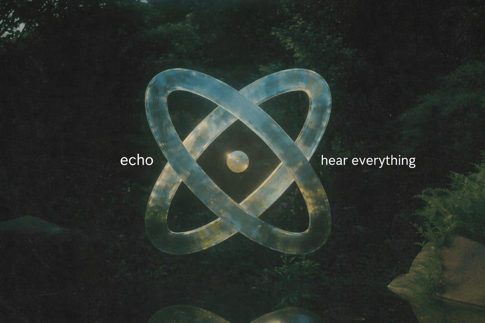

ECHO ~ Hear Everything

Understanding audience sentiment across platforms by analyzing comments in real-time. Echo transforms raw feedback into visual intelligence that creators can act on immediately. From geographic sentiment mapping to emotional trend detection, every piece of audience data becomes actionable insight.
About Echo
Every day 500 million comments are posted on YouTube, Instagram, and Reddit. This is the most honest feedback creators can get. But:
- Scale Issue: Reading 10K comments manually is impossible
- Context Missing: A single comment doesn't tell you overall audience mood
- Geography Blind: Comments from India or US? You don't know
- Patterns Hidden: When was your audience happy, when angry? No tracking
- Abuse Ignored: Toxic comments silently accumulate
Result: Creators make the next video based on guesswork. Hit/miss ratio stays low.
What ECHO Does
ECHO is not a traditional sentiment dashboard. It provides three cinematic experiences:
We believe that understanding your audience at scale should be beautiful, intuitive, and actionable. Most analytics tools throw spreadsheets at creators — rows of data with no context, no emotion, no story. ECHO transforms raw comments into visual narratives. You don't just see numbers; you see your audience's heartbeat across the globe in real time. Every sentiment becomes a visual, every trend becomes a pattern you can act on immediately.
1. The Globe - Hero Feature
A live 3D interactive globe where every comment becomes a colored pin that drops in real-time:
- Green pin = Positive (Love, appreciation)
- Red pin = Negative (Hate, criticism)
- Yellow pin = Emotional (Surprise, excitement)
- Black pin = Abusive (Flagged automatically)
Countries glow based on dominant sentiment. India 80% positive shows deep green glow. Brazil with a hate cluster shows red region glow. Your audience has a geography.
The Globe isn't just beautiful — it's strategically powerful. For the first time ever, creators can pinpoint exactly where their audience resonates most. A YouTuber discovers 40% of positive comments come from Southeast Asia, while North America shows mixed sentiment with an emerging hate cluster. This isn't just interesting; it's actionable. It tells you which markets love you, which ones are at risk, and where to focus your content strategy. Some creators will suddenly realize their comedy lands differently in India versus the US, or that a controversial topic sparked outrage in one region while acceptance in another. This geographic intelligence changes how creators think about their global audience.
2. The Commit Grid
Like a GitHub contribution graph — a 365-day grid showing your audience relationship history:
- Green = Audience loved you
- Red = Hate wave or toxic day
- Yellow = Emotional or controversial day
- Grey = Silence or dead engagement
- Ice Blue Diamond = Viral moment
Click any square to see all comments from that day. Your audience relationship, version controlled.
The Commit Grid is the long-term memory of your channel's health. Where the Globe shows you right now, the Grid shows you where you've been. Imagine scrolling back and seeing exactly when sentiment shifted. You uploaded a controversial video on March 15th—the square is bright red, comments spiking to 50% negative. But September 3rd shows ice blue—your most viral day ever. January had consistent grey squares—engagement was dying. This historical view reveals patterns you'd never spot in alerts. You'll see that every time you switch topics, sentiment drops. Or that your audience gets more emotional around certain times of year. Creators use this to version-control their audience relationship the same way developers track code quality. One swipe backwards and you can reconstruct what happened and why.
3. The Mirror + The Shield
The Mirror: An AI-written honest paragraph from your audience's voice. "Your audience loves your editing style but Tier 2 cities feel disconnected since October."
The Shield: Abusive comments go to RED ZONE, create offender profile cards, generate 1-click Cybercell reports, and export legal PDF evidence.
The Mirror is something no other tool offers: a synthesis of raw audience emotion written in natural language. Instead of charts, you get AI that reads all 10,000 comments and writes a paragraph as if your audience is speaking directly to you. And it's honest. You'll never get "your audience is happy" — you get "they love your authenticity but they're frustrated with upload frequency and they've noticed you're imitating creators they already watch." This kind of feedback, synthesized from thousands of voices, is what data scientists spend months extracting. ECHO gives it to you instantly.
The Shield is the safety layer creators desperately need but never had. Abusive comments are isolated, their senders are profiled (location, account age, history), and you get a legal-ready PDF that can be submitted to cyber police authorities. A creator being harassed can now generate evidence instantly — no need to manually screenshot 50 comments and compile a document. One click, they have their case ready.
How It Works
- User pastes a URL — YouTube, Instagram, Reddit, Twitter, or Amazon auto-detected
- Comments scrape in real-time using platform APIs
- 4-class sentiment analysis (HuggingFace + custom abuse classifier)
- IP geolocation with NameScript Intelligence fallback
- Live visualization on Globe, Grid, and Mirror
Tech Stack:
- Frontend: React + Three.js (Globe) + Chart.js (Grid)
- Backend: FastAPI + Celery + Redis
- AI: Claude API (Mirror summaries) + HuggingFace Transformers
- Scraping: Platform APIs + Playwright fallback
Why Creators Need ECHO
Before ECHO: Video → 10K comments → Read 50 → Guess → Next video flops
With ECHO: Video → 10K comments → Globe lights up → Patterns emerge → Data-driven next video → Guaranteed growth → Repeat
Real Outcomes:
- Understand geography: India positive, Brazil negative? Now you know
- Spot trends early: Hate wave starting? See it immediately on the Grid
- Protect yourself: Abuser's full profile plus 1-click legal action
- Audience speaks directly: Mirror gives you honest AI-written feedback
Most creators operate in a feedback vacuum. They upload, wait for metrics, and guess. They can't tell if their audience loved a video or tolerated it. They don't know which geographic region is growing and which is declining. They can't distinguish between constructive criticism and toxic abuse. The result: they make decisions based on intuition and luck, not insight. Video performance becomes a coin flip.
ECHO closes this gap. When a creator uploads a video, within minutes they watch it unfold on the Globe. Comments lighting up in different colors across different countries. Patterns emerging instantly. They see that Australia loved it but UK is mixed. That their emotional raw-vulnerability content resonates in Tier 2 Indian cities but bores premium metros. That a specific topic always triggers a hate spike. With this knowledge, they make the next video with precision. They know which content styles work where, what topics resonate with whom, and where their growth lies.
For growing creators especially, this is transformative. A channel stuck at 100K subscribers is usually stuck not because content is bad, but because they haven't found their true audience positioning. ECHO reveals it. Suddenly they realize: "Young women in Southeast Asia love my dance videos but I'm uploading education content that appeals to nobody." Decision made: pivot strategy, target the winning demographic, grow 10x.
The 4-Class Sentiment System
Traditional tools use 3 classes: Positive, Negative, Neutral. ECHO uses 4 classes plus a separate Abuse detector:
- 1. Positive — Love, appreciation, support
- 2. Negative — Hate, criticism, complaints
- 3. Emotional — Sadness, excitement, surprise
- 4. Neutral — Factual observations
- Plus: Abusive — Separate toxicity classifier
This granularity reveals true audience emotion.
Competitive Edge
ECHO wins because people emotionally connect when they see India glowing green or abusive black pins clustering. We provide the highest granularity in sentiment analysis, the most immersive visualization, and the only legal protection system for creators.
Several tools exist in the comment analysis space. But none combine these elements:
- Geospatial Sentiment: No other tool maps comments by location and sentiment simultaneously. No one else shows you the Globe.
- 4-Class + Abuse System: Competitors use basic positive/negative/neutral. We understand emotional nuance and separate abuse entirely.
- Historical Pattern Recognition: The Commit Grid is unique. No one else gives you a year-long view of your audience relationship.
- AI Mirror Summary: No other tool synthesizes comments into natural language insights. You don't get charts, you get a paragraph from your audience.
- Legal Shield: We're the only tool that generates cyber-harassment reports for law enforcement. Creators finally have documentation.
ECHO doesn't just collect data—it tells stories. And humans connect with stories, not spreadsheets.
Our Vision
The creator economy is the future of media. By 2030, more people will make income from content creation than from traditional employment. But the tools available to creators haven't evolved. Most monetization platforms still treat creators as content machines, not as businesses requiring deep audience insight.
We believe creators deserve better. They deserve tools that respect their intelligence, tools that give them real power over their audience relationships, and tools that protect them from harassment. ECHO exists because creators have been asking for this for years and no one delivered.
Our vision is a world where every creator, from 1K followers to 10 million, has enterprise-grade audience intelligence at their fingertips. Where a kid in Mumbai can understand their global audience as well as a Netflix executive. Where toxic actors are identified and reported instantly. Where every creator makes data-driven decisions about their content strategy because the data is finally presented in a way they can understand and act on.
In 5 years, ECHO will be the operating system that sits between creators and their audience. Not just analyzing comments, but helping creators build deeper relationships with their viewers, monetize more effectively, and grow sustainably.
Built by Creators, for Creators
ECHO was born from frustration. Our founders spent years watching talented creators struggle with decision-making because they lacked insights. A YouTuber with 500K subscribers couldn't tell which content styles worked where. A Twitch streamer didn't know if harassment was increasing. A TikTok creator made content decisions by feel, not by data.
We know this world because we live in it. Our team includes creators, developers, and AI researchers who've personally dealt with the problems ECHO solves. We built the tool we wished we had.
Ready to Listen?
Paste any YouTube, Instagram, or Reddit URL and watch the world light up. Your 2 million people are talking. ECHO makes you listen.
Your audience is speaking. Every comment is a vote, a preference, a desire, a complaint, a moment of vulnerability. For too long, creators have had to guess what all those voices were saying. The noise was too loud, the scale too massive, the tools too primitive.
ECHO changes that. In 30 seconds, you go from "I have 10K comments but I don't know what they mean" to seeing the full picture. Your biggest fans, your growing detractors, your silent segments, your geographic strongholds, your vulnerability. All at a glance. All actionable.
This is what happens when creator intelligence meets beautiful design. When data science respects storytelling. When technology amplifies human judgment instead of replacing it.
ECHO — Hear Everything. Know More. Grow Faster.